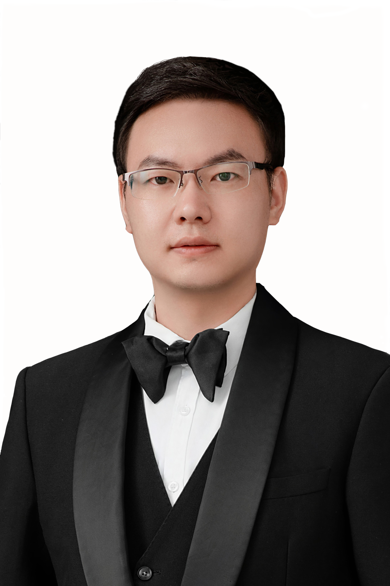

|
Shao, Renrong (邵仁荣)
|
 |
Ph.D., Postdoc, Assistant Professor
Faculty of Military Health Services
Naval Medical University (Second Military Medical University)
Address: No. 800, Xiangyin Road, Yangpu District, Shanghai, P.R. China
E-mail: roryshaw6613@gmail.com, roryshao@foxmail.com
|
About Me
Renrong Shao is a Assistant Professor and a Postdoctoral Fellow collaborated with Prof. Lulu Zhang (Changjiang Scholar) at the Naval Medical University.
He received the Ph.D. degree from the School of Computer Science and Technology, East China Normal University,
in 06.2024, advised by Prof. Jun Wang (the Young Thousand Talents Program) and Prof. Wei Zhang.
His main research interests include Model Compression, Transfer Learning, AI Generated Content (AIGC) and AI for Science (AI4S).
Currently, as the first author, he has published more than 10 works, covering Papers and Patents,
including 5 high-level papers at CCF-A or SCI Q1 level Conferences or Journals, and several papers are under review.
He also served as a reviewer for several respected journals and conferences, such as TIP, TKDE, ACM MM, PR, etc.
Throughout his academic career, he has participated in the research and development of over 10 engineering initiatives.
Furthermore, he has consistently excelled in academic competitions, garnering many accolades and distinctions on behalf of the institution.
Research
My research interests include:
Model Compression: Knowledge Distillation (KD), Model Quantification.
Transfer Learning: Data-free Knowledge Distillation(DFKD), Source-free Domain Adaptation (SFDA).
Generated Content (AIGC): Large Language Model (LLM), Stable Diffusion Model (SD).
AI for Science (AI4S): Medical Image Segmentation (MIS).
Selected Publications
-
Consistent Assistant Domains Transformer for Source-free Domain Adaptation. IEEE Transactions on Image Processing (IEEE TIP), 2025. (CCF A, JCR Q1, IF = 13.7)
Renrong Shao, W. Zhang*, K. Luo, Q. Li*, J. Wang*.
-
Attention Residual Fusion Network with Contrast for Source-free Domain Adaptation. IEEE Transactions on Circuits and Systems for Video Technology (TCSVT), 2025. (CCF B, JCR Q1, IF = 11.1)
Renrong Shao, W. Zhang*, J. Wang*.
-
Data-free Knowledge Distillation for Fine-grained Vision Categorization. IEEE International Conference on Computer Vision (ICCV-23), Oct. 2023. (CCF A)
Renrong Shao, W. Zhang*, J. Yin, J. Wang*.
-
Conditional Pseudo-Supervised Contrast for Data-Free Knowledge Distillation[J]. Pattern Recognition (PR), 2023: 109781. (CCF B, JCR Q1, IF = 8.4)
Renrong Shao, W. Zhang*, J. Wang.
-
A Survey of Knowledge Distillation in Deep Learning[J]. Chinese Journal of Computer, 45(08):1638-1673, 2022. (CCF A Chinese, IF = 6.8)
Renrong Shao, Y. Liu, W. Zhang*, J. Wang.
Note: * indicates the corresponding author.
Full list of publications in Google Scholar.
Patents and Copyrights
A compression and acceleration method of diffusion model based on data-free quantization (CN119359572A), 2024.
Renrong Shao, M. Li, X. Feng, B. Wang, J. Wang, W. Zhang
Data-free fine-grained classification model compression system and method based on knowledge distillation (CN114565019A), 2022.
Renrong Shao, Y. Liu, W. Zhang, J. Wang.
ShengZiBao application software. 2018SR727860
J. Guo, Renrong Shao.
Academic Service
Reviewer or PC
-
Chinese Journal of Computer (CJC 22,23), Pattern Recognition (PR 23), IEEE Transactions on Image Processing (IEEE TIP 23), IEEE Transactions on Knowledge and Data Engineering(TKDE 23), ACM Multimedia (ACM MM 23).
-
ACM Multimedia (ACM MM 24), International Conference on Image Processing (ICIP 24), International Conference on Neural Information Processing (ICONIP 24, PC Member).
-
IEEE International Conference on Robotics and Automation (ICRA 25), International Conference on Intelligent Robots and Systems (IROS 25), International Conference on Neural Information Processing (ICONIP 25).
-
IEEE Conference on Computer Vision and Pattern Recognition (CVPR 26), ...
Teaching
Education
07.2020 ~ 07. 2024, Ph.D., Student, School of Computer Science and Technology, East China Normal University. 07.2016 ~ 03. 2019, M.E., School of Computer Science and Software Engineering, East China Normal University. 09.2012 ~ 07. 2016, B.E., School of Information Engineering, Yan Cheng Normal University.
Awards
Jun. 2024, Service Contribution Award of ECNU. (School Level) Jun. 2023, Outstanding Communist Party Member (School Level) Oct. 2021, Doctoral Student Research and Innovation Fund (School Level) May. 2019, Outstanding Graduate, Shanghai (Province Level) Oct. 2018, National Scholarship, East China Normal University (National Level) Sep. 2017, Third Prize of the 14th Chinese Postgraduate Mathematical Modeling Competition "Huawei Cup" (National Level) May. 2014, Special Prize of Chinese College Students Computer Design Competition in Jiangsu Zone. (Province Level) Jul. 2014, Second Prize of Chinese College Students Computer Design Competition (National Level) Aug. 2014, Third Prize of Chinese College Students Service Outsourcing Innovation and Entrepreneurship Competition (National Level)
Work Experience
Postdoctoral, Naval Medical University (Second Military Medical University), 09.2025- Present Assistant Professor, Naval Medical University (Second Military Medical University), 07.2024- Present Software Engineer, Ping An Insurance (Group) Company of China, Ltd., 03.2019-07.2020 Summer Intern, Industrial Bank Co., LTD. of China, 07.2018-09.2018 Intern, Hasco vision technology (Shanghai) co. in SAIC (Group) , 03.2018-07.2018
|